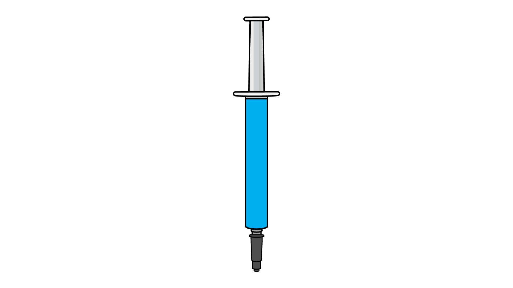
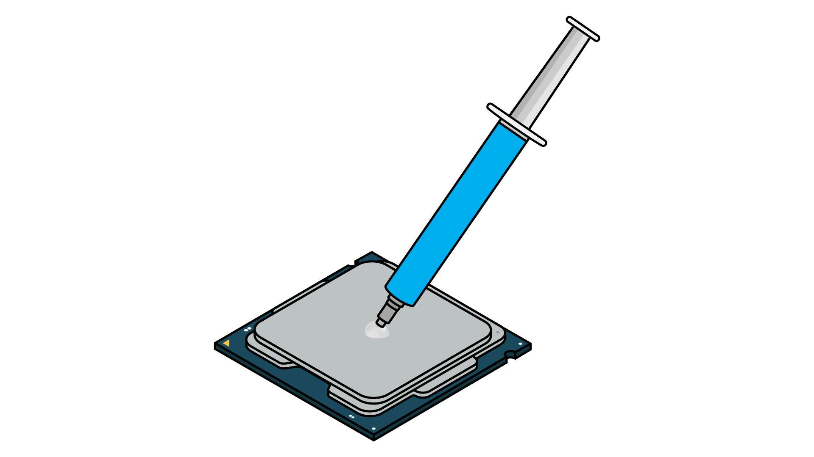
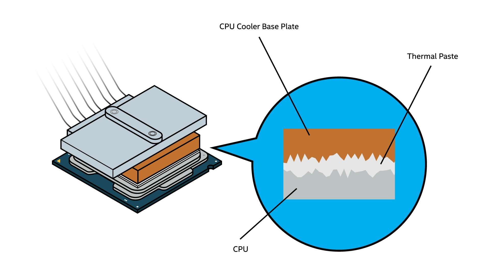
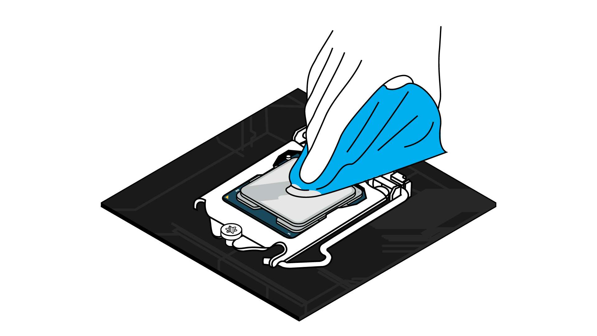
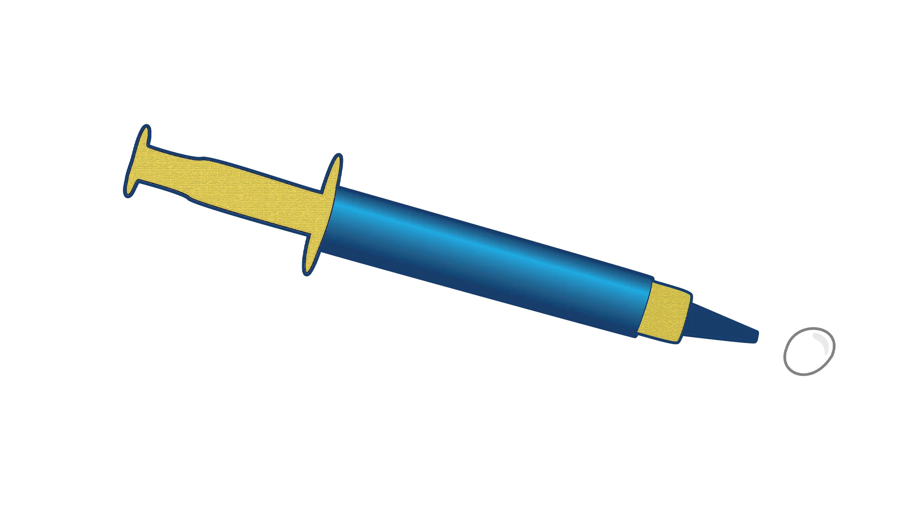
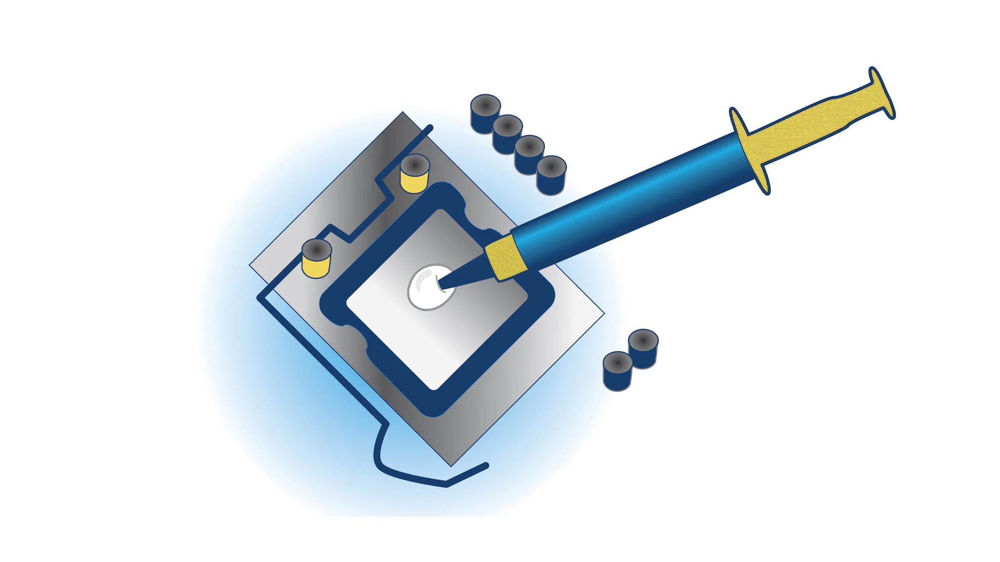

นี่คือข้อมูลทั้งหมดที่คุณต้องทราบเกี่ยวกับการใช้ซิลิโคน: ใช้เพื่อวัตถุประสงค์ใดและวิธีการใช้เพื่อให้มั่นใจว่าโปรเซสเซอร์ของคุณมีการระบายความร้อนอย่างเหมาะสม
หากคุณเข้าไปอยู่ในโลกของการประกอบพีซี คุณจะต้องเคยได้ยินเกี่ยวกับซิลิโคน วัสดุนี้ยังถูกเรียกว่าจาระบีความร้อน, ซิลิโคนความร้อน, ซิลิโคน CPU, เจลความร้อน และวัสดุอินเตอร์เฟซความร้อน (TIM) ในชื่ออื่นๆ ไม่ว่าคุณจะเรียกอย่างไร การประยุกต์ใช้งานซิลิโคนที่ถูกต้องเป็นส่วนสำคัญเพื่อให้แน่ใจว่า CPU ของคุณทำงานได้อย่างถูกต้อง
นั่นจึงเป็นเหตุผลที่ว่าทำไมจึงจำเป็นที่จะต้องรู้ว่ามันทำงานอย่างไร และยังต้องรู้วิธีใช้อย่างถูกต้องเมื่อทำงานกับ CPU อีกด้วย

คุณต้องใช้ซิลิโคนเมื่อใด
ใช้วัสดุถ่ายเทความร้อนเมื่อทำการติดตั้งโซลูชันระบายความร้อน เมื่อนึกถึงซิลิโคน ในบริบทของการประกอบพีซีอาจหมายถึงกระบวนการการติดตั้งระบบระบายความร้อนของ CPU เช่น เมื่อคุณซื้อการ์ดกราฟิก โซลูชันระบายความร้อนก็ได้รวมไว้แล้ว โดยปกติแล้วคุณจะไม่ต้องกังวลเกี่ยวกับการติดตั้งระบบระบายความร้อนลงใน GPU นอกจากคุณจะสนใจโซลูชันหลังการขาย เช่น การระบายความร้อนด้วยของเหลวแบบกำหนดเอง ด้วยระบบระบายความร้อน CPU คุณมีตัวเลือกในการเลือกสิ่งที่คุณต้องการ แต่นั่นหมายความว่าคุณจำเป็นต้องติดตั้งด้วยตัวเอง
คำศัพท์ที่คุณต้องการรู้
ควรระบุคำศัพท์ที่เราจะใช้ เพื่ออธิบายว่าฟังก์ชันซิลิโคนทำงานอย่างไร
หน่วยประมวลผลกลาง (CPU) - ศูนย์การประมวลผลข้อมูลของพีซี ซึ่งจะดำเนินการทุกคำสั่งในการทำงาน และจะส่งคำสั่งไปยังฮาร์ดแวร์อื่นๆ ในคอมพิวเตอร์ของคุณ หากคอมพิวเตอร์คือร่างกาย CPU ก็คือสมอง ซึ่งมีความสำคัญมากๆ ต่อการทำงานของพีซีทุกเครื่อง CPU สมัยใหม่จะทำงานในปริมาณมากต่อวินาที และนั่นทำให้เกิดความร้อน เพื่อให้ CPU ทำงานได้อย่างมีประสิทธิภาพสูงสุด จะต้องมีการระบายความร้อนอย่างเหมาะสม โดยปกติแล้วจะมีอุปกรณ์ระบายความร้อนที่ออกแบบมาเพื่อการนี้โดยเฉพาะ ซึ่งจะทำให้ซิลิโคนเป็นสิ่งสำคัญ ถ้าอยากทราบว่า CPU ทำขึ้นมาอย่างไร
ตัวกระจายความร้อนในตัว (IHS) - “ฝา” โลหะของ CPU ซึ่งทำหน้าที่เป็นฮีทซิงค์ที่ออกแบบมาเพื่อกระจายความร้อนจากโปรเซสเซอร์ไปยังระบบระบายความร้อน CPU และยังช่วยป้องกันโปรเซสเซอร์ที่อยู่ภายใน นี่เป็นส่วนหนึ่งของ CPU ที่ยังคงปรากฏให้เห็นหลังจากติดตั้งในเมนบอร์ด และเป็นพื้นผิวที่คุณใช้ซิลิโคนทา
ระบบระบายความร้อน CPU - อุปกรณ์ที่คอยรักษาอุณหภูมิให้ CPU ของคุณทำงานในระดับดีที่สุด ระบบระบายความร้อน CPU มักจะใช้อากาศหรือของเหลวในการเปลี่ยนแปลงความร้อนที่เกิดจากการทำงานของ CPU
แผ่นฐาน - ฐานเหล็กของเครื่องระบายความร้อนแบบอากาศที่ยึดกับ IHS ของ CPU การออกแบบนี้ช่วยให้การถ่ายเทความร้อนผ่านการพาความร้อนไปยังครีบของฮีทซิงค์ ซึ่งจะสามารถนำไปกระจายกับพัดลม
บล็อคน้ำ - อุปกรณ์ที่ยึดติดกับ IHS เมื่อใช้อุปกรณ์ระบายความร้อนแบบเหลวแบบ All-In-One (AIO) หรือลูประบายความร้อนแบบกำหนดเอง ซึ่งจะถ่ายโอนความร้อนจาก IHS ไปยังของเหลวระบายความร้อน ซึ่งจะส่งความร้อนนั้นไปยังพัดลมที่หม้อน้ำ
ซิลิโคน - สารสีเทาเงินที่คุณใช้กับโปรเซสเซอร์ก่อนติดตั้งโซลูชันระบายความร้อน ซึ่งช่วยให้การถ่ายโอนความร้อนจาก IHS ของโปรเซสเซอร์ไปยังแผ่นฐานหรือบล็อคน้ำของระบบระบายความร้อน CPU ได้อย่างมีประสิทธิภาพ ซึ่งถูกออกแบบขึ้นเพื่อระบายความร้อน

ทำไมคุณต้องใช้ซิลิโคน

แม้ว่าฐานโลหะของระบบระบายความร้อน CPU และ IHS ของ CPU จะดูเรียบเนียนด้วยตาเปล่า แต่แผ่นโลหะนี้มีรอยตำหนิขนาดเล็กมากจนทำให้ถ่ายโอนความร้อนได้ไม่ดี พื้นผิวทั้งสองจึงไม่ได้รับการสัมผัสอย่างเต็มที่เนื่องจากความไม่สมบูรณ์ดังกล่าว ดังนั้นซิลิโคนจึงช่วยเติมเต็มช่องโหว่นั้น ทำให้การถ่ายเทความร้อนที่มีประสิทธิภาพมากขึ้น
เพียงทาลงไป ซิลิโคนจะช่วยการทำงานของระบบระบายความร้อน CPU และ CPU ที่เย็นลงจะช่วยลดปัญหาประสิทธิภาพการทำงานลง เช่น การจำกัดความร้อน
การเตรียมการที่สำคัญสำหรับการใช้งานซิลิโคน
โปรเซสเซอร์ส่วนใหญ่ต้องการโซลูชันระบายความร้อนเพื่อให้ทำงานได้อย่างมีประสิทธิภาพสูงสุด แต่กระบวนการการติดตั้งระบบระบายความร้อน CPU ในพีซีนั้นแตกต่างออกไป
ระบบระบายความร้อน CPU ทุกตัวจำเป็นต้องใช้ซิลิโคน แต่หลายๆ ระบบจะต้องมีการนำมาใช้ก่อนเพื่อให้กระบวนการติดตั้งง่ายขึ้น หากคุณต้องการทราบว่าซิลิโคนได้ติดมาแล้วหรือไม่ ให้ตรวจดูที่ด้านล่างของแผ่นฐานหรือบล็อคน้ำของระบบระบายความร้อน CPU ซึ่งจะติดเข้ากับ CPU ถ้ามีซิลิโคนสีเงินอยู่แล้ว คุณไม่จำเป็นต้องเพิ่มอีกในระหว่างขั้นตอนการติดตั้ง
สิ่งที่ต้องคำนึงถึงก่อนที่จะเริ่มต้น:
- ตรวจสอบให้แน่ใจว่า CPU สะอาด และไม่มีซิลิโคนเก่าทาอยู่ หากมี ให้เช็ดซิลิโคนเก่าออกจากฝาของ CPU ด้วยไอโซโพรพิลแอลกอฮอล์ และผ้าไมโครไฟเบอร์หรือทิชชู่ที่ไม่ฉีกขาดอย่างระมัดระวัง และปล่อยให้แห้งก่อนดำเนินการต่อ
- ก่อนที่คุณจะเริ่มนำซิลิโคนมาใช้ โปรดตรวจดูให้แน่ใจว่าส่วนที่เหลือของระบบระบายความร้อน CPU พร้อมสำหรับการติดตั้งแล้ว โปรดดูคำแนะนำในการติดตั้งระบบระบายความร้อน CPU ให้ครบทุกขั้นตอน และตรวจดูให้แน่ใจว่าคุณมีเครื่องมือที่จำเป็นอยู่ใกล้มือ

สถานการณ์ที่ควรหลีกเลี่ยง:
- ตรวจสอบให้แน่ใจว่าได้ใช้ซิลิโคนในปริมาณที่ถูกต้อง ซึ่งเป็นขนาดของถั่วหรือเมล็ดข้าวโดยประมาณ ปริมาณที่ไม่เพียงพออาจไม่ครอบคลุมพื้นที่พื้นผิวที่จำเป็นเพื่อให้ทำงานได้อย่างมีประสิทธิภาพ ปริมาณที่มากเกินไปจะลดประสิทธิภาพของซิลิโคน เนื่องจากพื้นผิวโลหะจะอยู่ห่างกันเกินไป และยังมีความเสี่ยงที่จะหยดไปยังเมนบอร์ดในระหว่างการติดตั้งอีกด้วย
- ซึ่งนี่อาจเป็นการแพร่กระจายซิลิโคนบน CPU ด้วยตัวคุณเอง เราขอแนะนำให้ใช้แรงดันจากแผ่นฐานหรือบล็อคน้ำในการติดตั้งให้กับคุณ การใช้งานที่ไม่ถูกต้องอาจทำให้เกิดฟองอากาศขึ้นในซิลิโคน ซึ่งอาจส่งผลเสียต่อการนำความร้อนได้
- การนำซิลิโคนกลับมาใช้ใหม่ก็สามารถทำให้เกิดฟองอากาศได้ หากเกิดปัญหาขึ้นในระหว่างกระบวนการติดตั้งและคุณจำเป็นต้องถอดระบบระบายความร้อน CPU ออก คุณควรทำความสะอาดอุปกรณ์ทั้งหมดตามที่ได้กล่าวไว้ข้างต้น จากนั้นลองอีกครั้งด้วยแอพพลิเคชันใหม่ หากคุณจำเป็นต้องนำกลับมาใช้งานอีกครั้งจริงๆ เช่น ในกรณีที่ต้องรอซิลิโคนใหม่เพื่อแทนที่ คุณสามารถทำได้ แต่โปรดจำไว้ว่านี่เป็นวิธีแก้ปัญหาระยะสั้น และเราขอแนะนำให้ใช้วิธีการใหม่ที่เหมาะสมก่อนจะใช้ระบบระบายความร้อน CPU ของคุณในระยะยาว

วิธีการใช้ซิลิโคน — ขั้นตอนอย่างละเอียด
เราขอแนะนำให้อ่านส่วนนี้ทั้งหมดก่อนที่จะเริ่มกระบวนการติดตั้ง เพื่อให้คุณทราบถึงสิ่งที่จะเกิดขึ้น และสามารถวางแผนล่วงหน้าได้
1.อ่านคำแนะนำที่เกี่ยวข้องทั้งหมดก่อนเริ่มใช้งาน ซึ่งรวมถึงที่มากับระบบระบายความร้อน CPU และซิลิโคนด้วย ซิลิโคนและระบบระบายความร้อน CPU ทุกแบรนด์นั้นมีความแตกต่างกันเล็กน้อย และการรู้ถึงรายละเอียดของส่วนประกอบของคุณก่อนที่จะเริ่มต้นจะช่วยให้กระบวนการดำเนินไปได้อย่างราบรื่นยิ่งขึ้น
2.ทาซิลิโคนที่ตรงกลางของ IHS ของ CPU (ถ้าคุณได้ใช้ซิลิโคนบนระบบระบายความร้อนไว้ก่อนแล้ว ก็ข้ามขั้นตอนนี้ไปได้) คุณจะต้องใช้เพียงจำนวนเล็กน้อย ในขนาดประมาณเมล็ดข้าวหรือถั่ว ทาลงบนศูนย์กลางของเครื่องกระจายความร้อนในตัว
3.ติดตั้งระบบระบายความร้อน CPU ใช้แรงกดเบาๆ จากบนลงล่างเพื่อวางแผ่นฐานหรือบล็อคน้ำของระบบระบายความร้อนของคุณไปยัง CPU และกดแรงดันนั้นไว้ขณะที่ติดตั้งระบบระบายความร้อนเข้ากับกลไกการติดตั้ง คุณจะต้องใช้แรงมากพอเพื่อป้องกันไม่ให้ระบบระบายความร้อนขยับเขยื้อน และเพื่อกระจายซิลิโคนลงไปอย่างสม่ำเสมอ แต่คุณก็ไม่ต้องออกแรงกดขนาดที่จะสามารถทำให้เมนบอร์ดงอหรือทำให้ CPU เสียหายได้ วางระบบระบายความร้อนให้อยู่ในตำแหน่งขณะที่คุณติดตั้งเข้ากับเมนบอร์ดในรูปแบบทแยงมุม และทำการยึดสกรู (สมมติว่าคุณกำลังขันสกรู) เหมือนกับกำลังวาด “X” ลงไป อย่าขันสกรูจนแน่นจนกว่าจะติดทั้งสี่มุมแล้ว จากนั้นหมุนสกรูสองสามครั้งก่อนที่จะเคลื่อนไปยังจุดถัดไปเพื่อให้มั่นใจถึงแรงกดที่สม่ำเสมอ
4.ตรวจสอบงานของคุณอีกครั้ง เมื่อติดตั้งแผ่นฐานหรือบล็อคน้ำของระบบระบายความร้อน CPU อย่างแน่นหนาแล้ว ให้ตรวจสอบการทำงานของคุณเพื่อให้แน่ใจว่าทุกอย่างถูกต้อง ไม่ควรมีซิลิโคนกระเด็นไปที่ขอบของ CPU หรือที่ตำแหน่งใดๆ บนเมนบอร์ด หากมี นั่นแสดงว่าคุณใช้ซิลิโคนมากเกินไป และควรทำความสะอาดโดยใช้แอลกอฮอล์และเริ่มต้นกระบวนการอีกครั้ง หากทุกอย่างดูสะอาดเรียบร้อย และระบบระบายความร้อนไม่ขยับเมื่อคุณสัมผัส เราก็ขอแสดงความยินดีด้วย คุณได้ผ่านขั้นตอนสำคัญนี้แล้ว

คุณควรเปลี่ยนซิลิโคนบ่อยแค่ไหน
ในกรณีส่วนใหญ่คุณไม่จำเป็นเปลี่ยนใหม่มากกว่าหนึ่งครั้งในเวลาทุกสองสามปี แม้ว่าคุณควรแทนที่ซิลิโคนของคุณหากคุณนำระบบระบายความร้อนออกด้วยเหตุผลใดก็ตาม คุณอาจต้องพิจารณาในการทาซิลิโคนใหม่อีกครั้งหากคุณพบว่าอุณหภูมิ CPU กำลังสูงขึ้น
หากมีข้อสงสัย ให้ปรึกษาผู้ผลิตซิลิโคนและปฏิบัติตามคำแนะนำของพวกเขา
เย็นสบายไร้กังวล
ซิลิโคนอาจไม่ได้ถูกพูดถึงบ่อยเท่าฮาร์ดแวร์สำหรับเล่นเกม เช่น CPU หรือ GPU แต่ก็เป็นส่วนสำคัญในการทำให้ส่วนประกอบเหล่านั้นทำงานได้ดีที่สุด การทราบวิธีใช้ซิลิโคนอย่างเหมาะสม สามารถช่วยให้คุณมั่นใจได้ว่าระบบจะได้รับประสิทธิภาพการทำงานที่ดีที่สุดจาก CPU ของคุณ
|